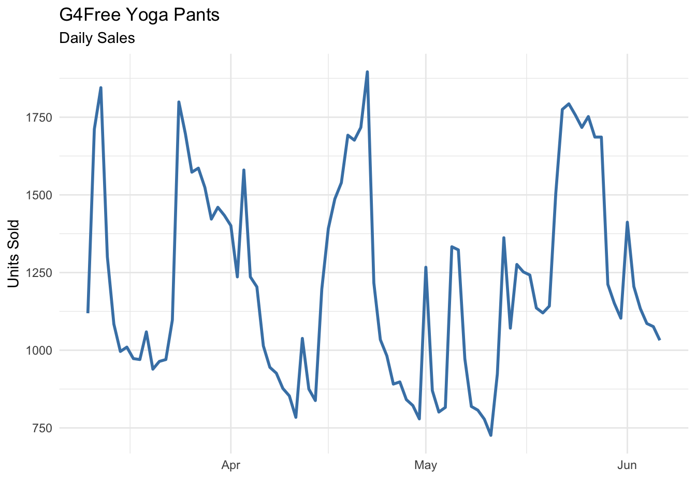
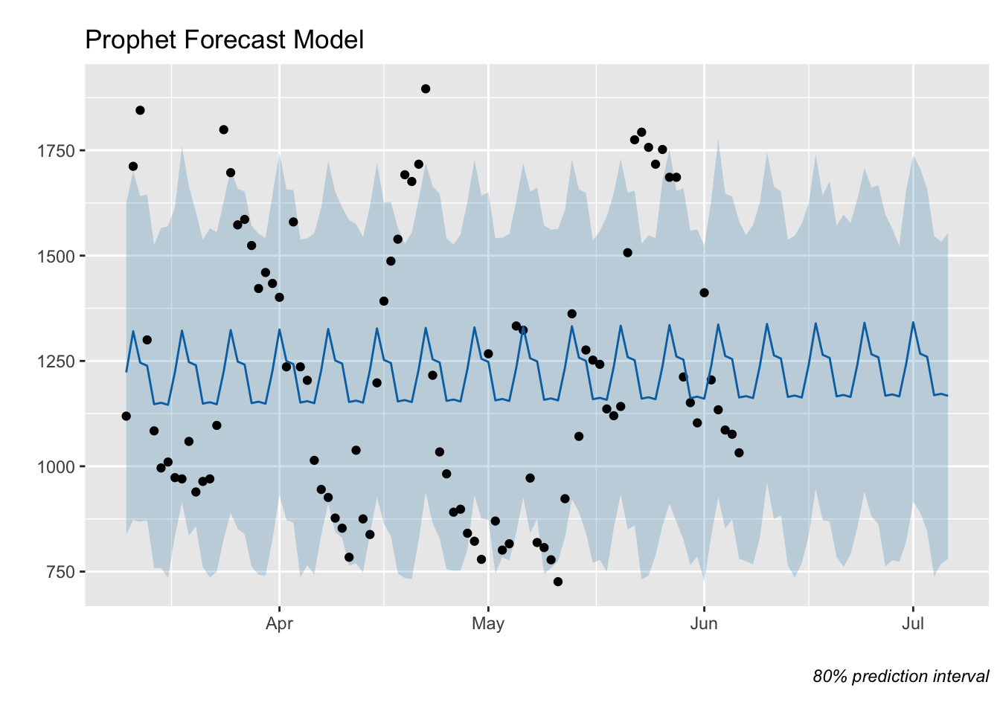
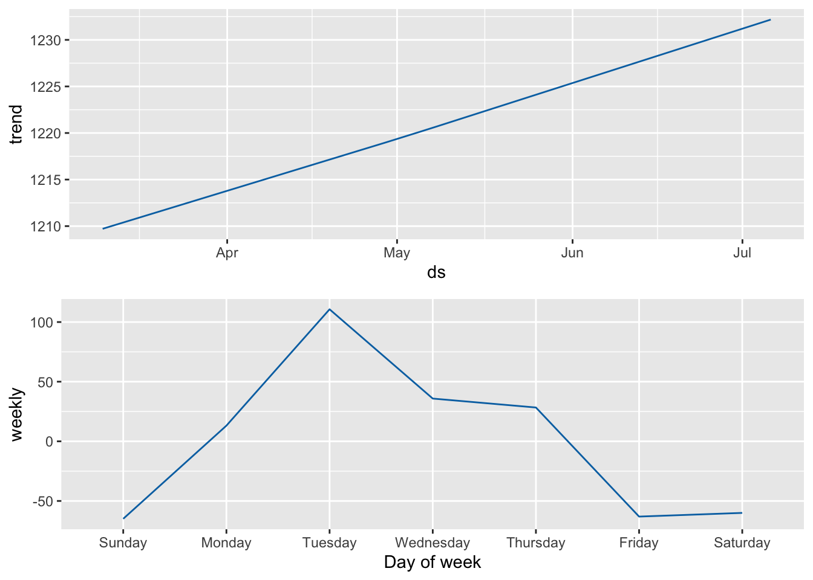
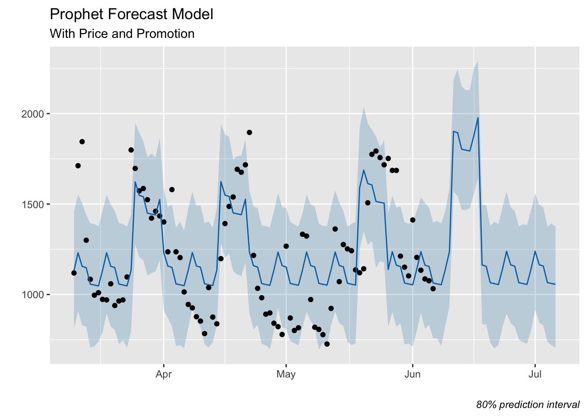
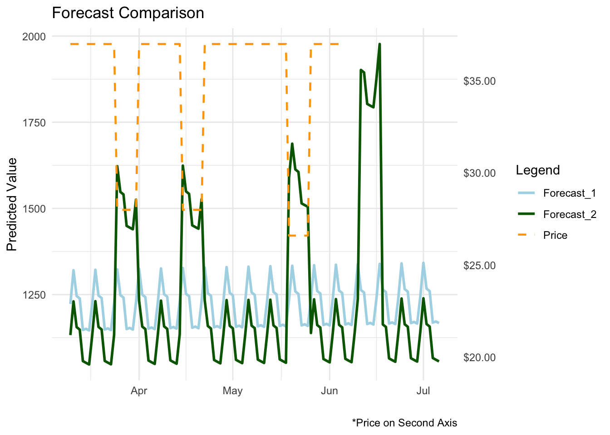

Forecasting Yoga Pants Sales & Pricing Trends on Amazon
Summary
This case study focuses on developing a demand forecasting model to optimize inventory planning and marketing strategies. Leveraging the Market Intelligence platform Jungle Scout, 90 days of Amazon sales data for a top-performing yoga product was extracted—fittingly, a pair of high-selling yoga pants.
Product: G4Free Yoga Pants Womens Wide Leg Pants with Pockets High Waist
| G4Free Yoga Pants - B0C7ZBNWL5 | |||||
| Date | Units_Sold | Rank | Rating | Reviews | Price |
|---|---|---|---|---|---|
| 2025-03-10 | 1119 | 71 | NA | NA | 36.99 |
| 2025-03-11 | 1712 | 19 | NA | NA | 36.99 |
| 2025-03-12 | 1845 | 15 | NA | NA | 36.99 |
| 2025-03-13 | 1300 | 45 | NA | NA | 36.99 |
| 2025-03-14 | 1084 | 78 | NA | NA | 36.99 |
| 2025-03-15 | 996 | 100 | NA | NA | 36.99 |
Objective
In this analysis we will deliver the following:
Develop a demand forecast model using Prophet in R.
Identify if adding price as a regressor improves the accuracy of the model.
Provide key observations and determine if the forecast model sufficiently captures the demand patterns for future predictions and make recommendations for further analysis.
Step 1. Plot the Historical Data

Initial observations:
General Growth Pattern: Sales appear to fluctuate but show periodic spikes, particularly in late April and late May, suggesting demand surges at specific times.
Price Impact on Sales: A price drop to $26.59 around May 21 likely correlates with higher sales volumes, indicating price sensitivity in demand.
Ranking Reflects Demand: Lower numerical rankings (higher product visibility) coincide with peak sales days, reinforcing the relationship between rank and units sold.
Review Effect: Sales jumps (e.g., April 24, May 25) align with visible review counts, suggesting consumer engagement boosts purchases.
Weekly Demand Spikes: Some of the highest sales numbers appear on Tuesdays, hinting at shopper behavior patterns on Amazon.
Step 2. Prophet Model Implementation
Prophet is an open-source forecasting model that is widely used for time-series analysis in R and Python. It is designed to handle time-series data with strong seasonality, holidays, and trend changes with minimal manual tuning. Creating a model is simple and straightforward.
Overall, the observations on the demand patterns from above align well with the time series data modeling and prediction capabilities of Prophet.
Model fit:
# Format data for model
df_basic <- sales_data[, c("Date", "Units_Sold")]
colnames(df_basic) <- c("ds", "y")
# Fit basic model
m <- prophet(df_basic, interval.width = .80)
# Define prediction horizon and forecast
future <- make_future_dataframe(m, periods = 30) #next 30 days
forecast <- predict(m, future)Notes describing each step of model creation follow “#”
Step 3. Plot the Forecast
Now that we have a forecast model we can visualize it. The blue line represents the model fit and future predictions with a shaded prediction interval. Black dots are the actual units sold.

We can see the model picks up on the slight upward trend and the weekly seasonality. However, the prediction interval is relatively large.
Here is a more detailed look at the trend and seasonality components used in the model:

Step 4. Add Price to the Model
Now let’s see if we can improve the model by adding the daily price data as a regressor and plan a promotion from June 11th—17th, dropping the price from $36.99 to $19.99.
# Prepare historical data
df_reg <- sales_data[, c("Date", "Units_Sold", "Price")]
colnames(df_reg) <- c("ds", "y", "Price")
# Initialize Model & Add Regressor
m_reg <- prophet(interval.width = .80)
m_reg <- add_regressor(m_reg, 'Price')
# Fit Model with Regressor
m_reg <- fit.prophet(m_reg, df_reg)
# Create Future DataFrame
future_reg <- make_future_dataframe(m_reg, periods = 30)
# Bind historical and future prices
future_prices <- c(df_reg$Price, rep(36.99, 30)) # Extend historical prices + default future values
# Index range for June 11–17 promotion
future_prices[(length(future_prices) - 25):(length(future_prices) - 19)] <- 19.99
# Assign to Future DataFrame
future_reg$Price <- future_prices[(nrow(future_reg) - 119 + 1):nrow(future_reg)] # Keep matching structure
# Forecast
forecast2 <- predict(m_reg, future_reg)Step 5. Plot Updated Forecast

We can see a big improvement over the basic model. In addition to the trend and seasonality, the model is fitting the historical price changes without appearing to over fit the data. The prediction interval is also considerably smaller.
Step 6. Compare Forecasts
Here are the forecasts compared side by side with the price changes on the second axis:

Here we can better see that the overall predictions are lower with the second model. However, it is also more apparent how well the second model fits price. This would increase confidence in the price-drop promotion June 11th—June 17th in this scenario.
Step 7. Evaluate the Models
Let’s assess the quality of the models using cross-validation.
Cross-validation in time series forecasting is a way to test how well a model predicts future values based on past data. Instead of randomly splitting the data (like in standard machine learning), we respect the time order—training the model on older data and testing it on newer data. This helps simulate real-world forecasting scenarios and ensures the model is learning patterns that actually hold up over time.
Here are the cross-validation results for the first model:
| Forecast Model Performance Comparison | ||||
| rmse | mae | mape | coverage | |
|---|---|---|---|---|
| Prophet Forecast - Default | 393.61 | 324.64 | 0.26 | 0.71 |
| Prophet Forecast with Price | 335.87 | 259.89 | 0.20 | 0.62 |
| Metrics averaged across 7 tests | ||||
Prophet Forecast with Price performs better overall, with lower RMSE (335.87 vs. 393.61), indicating improved accuracy in predicting sales.
MAPE (Mean Absolute Percentage Error) is reduced (0.20 vs. 0.26), showing that incorporating price as a regressor improves percentage-based forecast accuracy.
Coverage decreases slightly (0.61 vs. 0.71) in the price-influenced model, suggesting a narrower prediction interval but potentially more confident estimates.
Conclusion
Stretching the Data—Optimizing Demand Forecasting
Incorporating price as a regressor significantly enhances forecast accuracy, making Prophet a more effective tool for demand planning. Since pricing and promotions are central to S&OP discussions, integrating these factors ensures forecasting aligns with real-world decision-making.
By accounting for price fluctuations, businesses can anticipate demand shifts more effectively, allowing for better inventory management and strategic pricing adjustments. In this case study, the improved model not only provides more precise forecasts but also supports proactive planning—helping businesses stay agile in a competitive market.
Much like flexibility in yoga, data-driven forecasting requires adaptability. By stretching the analysis beyond standard time-series trends, we gain forecasts that don’t just predict but inform smarter decisions.